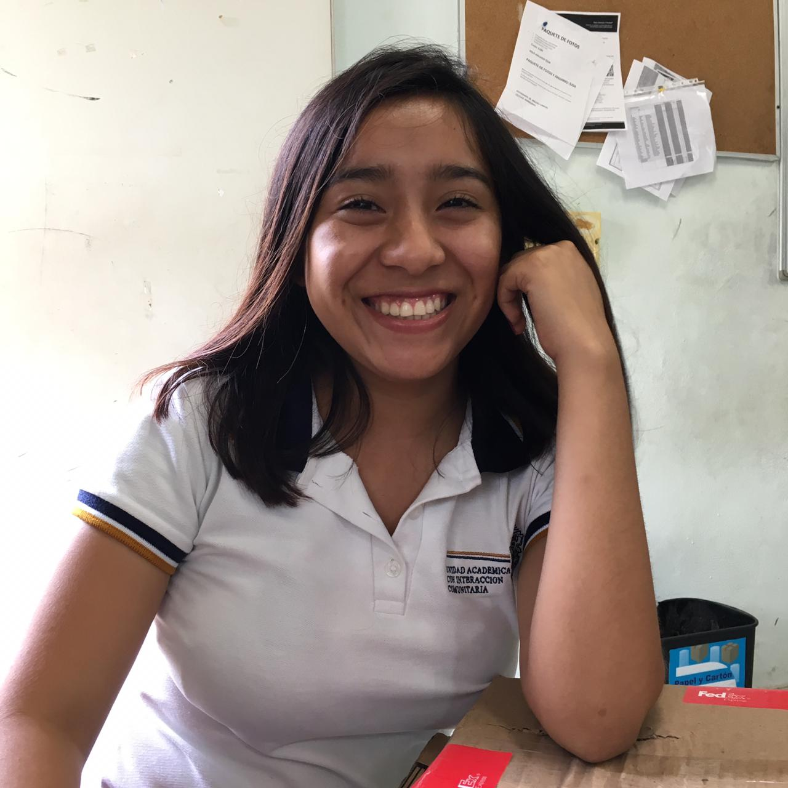

Capacidades y aptitudes personalesLengua materna
Unicamente hablo el idioma español
Otros idiomas
Idioma ingles un 30 %
Capacidades y aptitudes tecnicas
Proactividad
Capacidad de adaptacion
Trabajo en equipo
Creatividad
Conocimiento en informatica basico
Permiso de conduccion
Licencia para conducir obtenido el 30 de abril del 2019